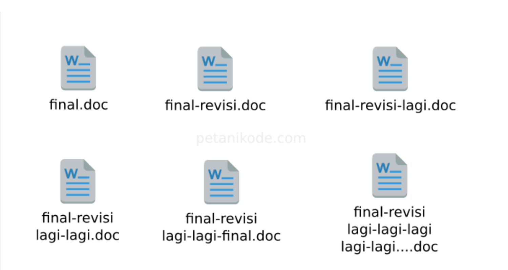
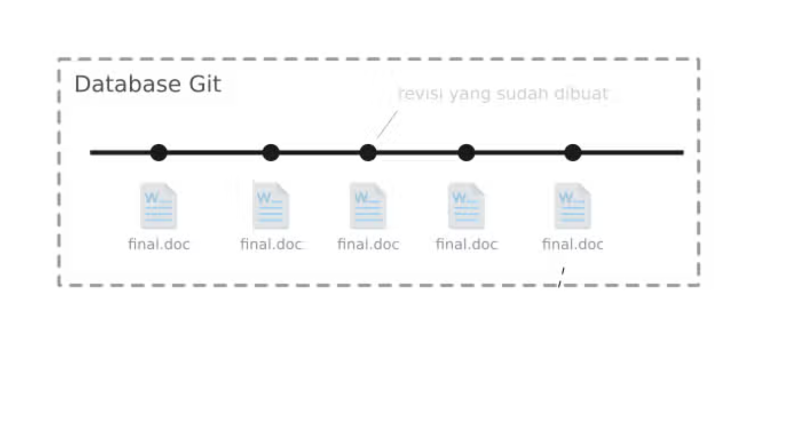
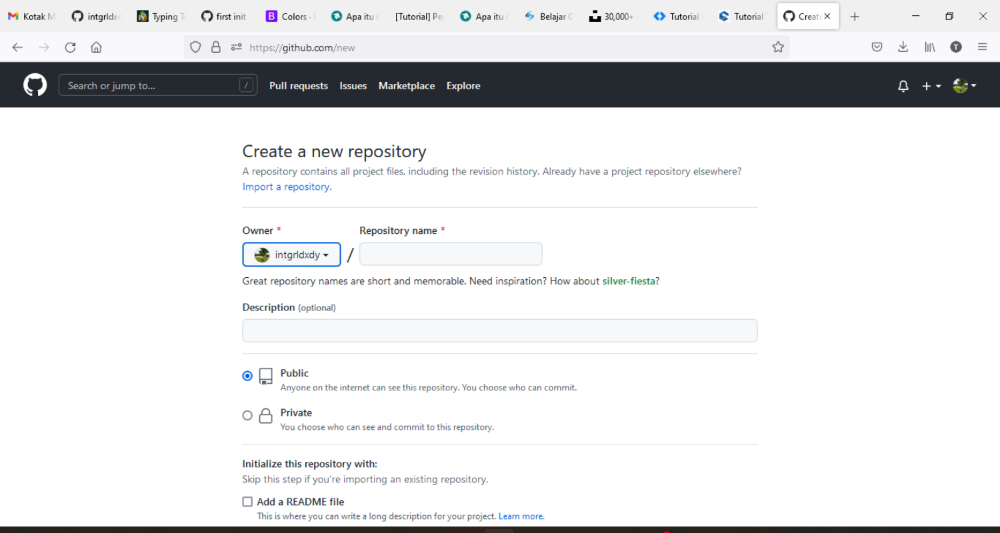

Apa Itu Git

Pengertian Git
Git adalah salah satu sistem pengontrol versi (Version Control System) pada proyek perangkat lunak yang diciptakan oleh Linus Torvalds. Pengontrol versi bertugas mencatat setiap perubahan pada file proyek yang dikerjakan oleh banyak orang maupun sendiri.
Git dikenal juga dengan distributed revision control (VCS terdistribusi), artinya penyimpanan database Git tidak hanya berada dalam satu tempat saja.

Semua orang yang terlibat dalam pengkodean proyek akan menyimpan database Git, sehingga akan memudahkan dalam mengelola proyek baik online maupun offline.
VCS terpusat memiliki beberapa kekurangan:
- Semua tim harus terkoneksi ke jaringan untuk mengakses source-code;
- Tersimpan di satu tempat, nanti kalau server bermasalah bagaimana?
Karena itu, Git hadir untuk menutupi kerkurangan yang dimiliki oleh VCS terpusat.
Apa yang dilakukan oleh Git?
Git sebenarnya akan memantau semua perubahan yang terjadi pada file proyek. Lalu menyimpannya ke dalam database.
Sebelum menggunakan git:
Setelah menggunakan git:
Saat kita ingin menyimpan semua perubahan pada file, biasanya kita membuat file baru dengan “save as”. Lalu, file akan menumpuk dalam direktori proyek seperti pada ilustrasi di atas.
Tapi setelah menggunakan Git…
Hanya akan ada satu file dalam proyek dan perubahannya disimpan dalam database.
Git hanya akan menyimpan delta perubahannya saja, dia tidak akan menyimpan seluruh isi file yang akan memakan banyak memori.
Bagaimana Cara Menggunakan Git?
Ada beberapa langkah yang perlu dilakukan untuk menggunakan git yaitu :
- Membuat akun pada layanan github
- Membuat Repositori online
Lalu kalian akan diarahkan ke halaman pembuatan repository, pembuatan repositori ini tergantung dari project kalian yang mau kalian upload, jadi saya harapkan kalian sudah punya proyek yang ingin di upload ke repositori.
 - Mengupload folder(repositori lokal)
jika sudah memiliki proyek yang ingin diletakkan di repository online, buka saja folder project tersebut dengan perintah command line, atau jika belum terbiasa di command line (nanti belajar command line) buka saja folder tersebut menggunakan file exploler dan klik kanan “open terminal/cmder here”.
- Mengerjakan projek
Selanjutnya yang harus dilakukan adalah mengerjakan projek untuk di publish di Github agar dapat menjadi portofolio teman-teman
Buka website github, buat akun baru terlebih dahulu

Setelah terbuat akun-nya, login dengan akun baru(kalau langsung diarahkan ke halaman utama), setelah itu pada pojok kanan atas terdapat tombol “+”, klik button tersebut dan pilih “new repository”.